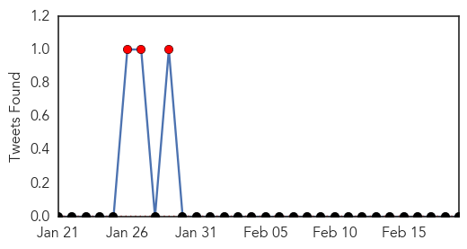
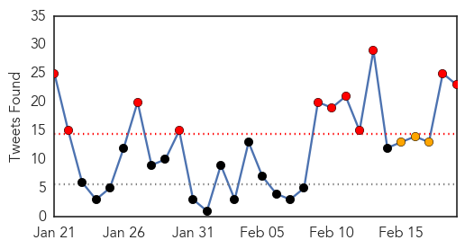

Measles
30-Day Web Trend
23 alerts, 4 warnings

30-Day Twitter Trend
3 alerts, 0 warnings

Article Locations

Article Confidences

Top Articles:
- 0.992
- CDC: California Measles Outbreak Matches Philippines Strain
- 0.990
- The Measles Outbreaks: An International Issue of Public Health
- 0.989
- Disney measles outbreak may have originated in the Philippines
- 0.989
- Measles cases appear in Washington state
- 0.976
- Disneyland measles cases genetically similar to Philippines outbreak
- 0.971
- Disneyland measles similar to Philippines cases
- 0.969
- Health director: Help prevent measles in Jasper County
- 0.967
- Measles have been reported in Canada
- 0.967
- Disneyland measles virus identical to type found in PH
- 0.960
- Measles Outbreak In California May Have Origins In The Philippines
- 0.956
- Villanova nursing professor advises parents on steps to take to prevent measles
- 0.951
- Kingsport Times-News: Outbreak causes vaccination debate to heat up
- 0.942
- OSDH encourages vaccinating for measles
- 0.936
- HEALTH: Measles patient may have exposed public to the disease
- 0.930
- What You Need To Know About The Measles Outbreak
- 0.920
- UCLA Warns More than 160 Patients About Dangerous 'Superbug' Exposure
- 0.919
- Disneyland Measles Outbreak Linked To Philippines
- 0.915
- UC schools to require immunizations
- 0.910
- Health official says Kane County has no measles cases
- 0.904
- No vaccines, no treatment – Orange County, Calif., pediatricians to parents
- 0.894
- County kindergarten vaccination rate lower than state average
- 0.893
- D.C. health officials won't release info on latest measles case
- 0.893
- No measles outbreak, Health dep’t says
- 0.880
- How Hospitals are Responding to Measles Outbreak
- 0.874
- Measles vaccinations should be up to date for spring break, warns health officer
- 0.869
- The danger of skipping vaccines
- 0.865
- Concerned parents attend forum on measles
- 0.864
- Required shots mean few military measles cases
- 0.849
- Valley vaccine clinic attracts four
- 0.844
- Disneyland measles may be linked to Philippines
- 0.841
- Dana Hills High School
- 0.831
- Deadly superbug outbreak at UCLA, some 200 exposed — RT USA
- 0.820
- State has second-worst measles vaccination rate in U.S.
- 0.814
- Portage Co. measles case test results still pending
- 0.814
- California health officials urge measles vaccine before spring travel
- 0.803
- Vaccination Exemptions and Outbreaks by State
- 0.792
- What the Anti-Vax Movement Doesn’t Tell You About Measles
- 0.792
- North Shore schools proactive against potential measles outbreak
- 0.773
- Outbreak of measles in California traced to PH
- 0.741
- Biggest rise in measles cases reported in Illinois
- 0.735
- The Royal Gazette:Bermuda Parenting
- 0.722
- New measles case in Niagara brings Ontario total to 17
- 0.709
- The importance of protecting against measles
- 0.709
- Hill hearing examines measles outbreak
- 0.708
- US officials urge measles vaccination
- 0.703
- Proposed bill would beef up Delaware's vaccination code
- 0.684
- Scientistis Make New Advance Against AIDS Virus
- 0.657
- News, Politics, Music, Calendar, Events in Spokane, Coeur d'Alene and the Inland Northwest
- 0.640
- Del. lawmakers address school immunization requirements
- 0.614
- Sen. Barbara Boxer slams anti-vaccination parents
Showing top 50 articles...
Top Tweets:
-
No tweets found for Feb 19, 2015
Ebola
30-Day Web Trend
0 alerts, 0 warnings

30-Day Twitter Trend
11 alerts, 3 warnings

Article Locations

Article Confidences

Top Articles:
- 1.000
- Limited airborne transmission of Ebola is ‘very likely,’ new analysis says
- 1.000
- WHO Warns Unsafe Procedures Hurting Anti-Ebola Efforts
- 1.000
- Lessons Learned From The Ebola Quarantine In Dallas
- 1.000
- 6 months into the Ebola outbreak, scientists say we're learning more about deadly virus
- 1.000
- WHO predicts almost 21,000 Ebola cases by November if no changes in outbreak response
- 1.000
- Ebola a threat to national security, public health crisis, says WHO
- 1.000
- Ebola outbreak by the numbers
- 1.000
- US working to step up Ebola aid, training doctors, nurses headed to outbreak zone
- 1.000
- Ebola outbreak in Liberia 'intense,' WHO finds
- 1.000
- Gatineau, Que. Patient's Ebola Test Comes Back Negative
- 1.000
- Gatineau Hospital Tests Girl For Ebola, Put In Isolation As Precaution
- 1.000
- New study says limited airborne transmission of Ebola is 'very likely'
- 1.000
- Texas Ebola quarantine success depended on help with daily needs: CDC
- 1.000
- Ebola Transmission Through Cough Possible, But Not Likely
- 0.999
- Sierra Leone hunts infected as Ebola crisis hits 'turning point'
- 0.999
- CDC Ready to Vaccinate 6,000 Against Ebola in Sierra Leone
- 0.999
- Sierra Leone Launches Door-To-Door Search to Fight Ebola
- 0.999
- Ebola virus precautions added to back-to-school advice on campus
- 0.999
- Ebola Scare Locks Down New Brunswick Hotel
- 0.999
- WHO allows some experimental treatments
- 0.999
- Ebola cases could grow by thousands per week if current spread continues
- 0.999
- Ebola tests negative for Gatineau girl who remains in isolation
- 0.999
- Canada pulling 3-member lab team back from Sierra Leone over Ebola fears
- 0.999
- Why Liberia's Ebola Quarantine In West Point Slum Will Fail
- 0.999
- Minister says 2 people have died of Ebola in Congo, cases unrelated to West Africa outbreak
- 0.999
- As Ebola outbreak slows, world health body shifts focus
- 0.999
- Sierra Leone renews Ebola campaign
- 0.999
- Airport screening for diseases like Ebola and swine flu misses around HALF of infected travellers because people 'lie about exposure to avoid delays'
- 0.999
- CDC ready to vaccinate 6,000 against Ebola
- 0.998
- Officials reopen Edmonton hospital ER after ruling out an Ebola infection
- 0.998
- World Health Organization says past week saw more Ebola cases than any other on record
- 0.998
- Back to the start
- 0.998
- Liberia Ebola fight success hailed
- 0.998
- UN urges more efforts in last phase of combat Ebola - Xinhua
- 0.997
- Ebola cases fall in West Africa, but challenges remain
- 0.997
- Cuba sending dozens of doctors, nurses to fight Ebola in West Africa
- 0.997
- Patients at Winnipeg's Health Sciences Centre confirmed not to have Ebola
- 0.997
- Liberia on verge of becoming Ebola-free: UN envoy
- 0.996
- Ebola and the International Health Regulations Treaty
- 0.996
- As Ebola outbreak accelerates, Sierra Leone hopes to slow infections down with 3-day shutdown
- 0.996
- ZMapp protects sick monkeys
- 0.996
- Canadian laboratory team evacuated from Ebola zone back in Canada
- 0.996
- United Nations cautions against complacency in Ebola progress
- 0.996
- Roundup: UN urges more efforts in last phase of combat Ebola
- 0.996
- Ebola UN envoy likens final phase of response to looking for needles in haystacks
- 0.995
- Guinea: AU Commission Kicks Against Attacks On Health Workers
- 0.995
- By mapping Ebola's deadly DNA, scientists seek answers to what makes it tick, how it exploded
- 0.994
- Ebola case count could rise by between 77,000 and 277,000 by year's end
- 0.994
- 'We need action now,' says CDC director Tom Frieden
- 0.994
- Over 800 health workers infected with Ebola
Showing top 50 articles...
Top Tweets:
- 0.955
- Ebola Update: 23218 confirmed probable & suspected cases reported in 3 most affected countries with 9365 deaths. EbolaResponse
- 0.921
- RT: From children orphaned by Ebola to health workers fighting the disease read our Ebola stories on: http://t.co/VZ72mf…
- 0.912
- Ebola Update: 23218 confirmed probable and suspected cases reported in 3 most affected countries with 9365 deaths. EbolaResponse
- 0.907
- RT: @EbolaAlert the rebuilding following ebola may be of much greater importance than the eradication of the virus …
- 0.889
- RT: Ebola Update: 23218 confirmed probable and suspected cases reported in 3 most affected countries with 9365 deaths. EbolaRe…
- 0.838
- RT: ASEOWA has trained 23 South African health workers to be deployed to Ebola affected countries soon AuonEbola http://t.c…
- 0.833
- RT: "Un centre novateur dont l'expertise doit être partagée" M. Cheikh Ahmed à l'OMS en visite au CTS Ebola http:…
- 0.822
- RT: As the Ebola Crisis Eases What's Next in West Africa?: U.S. troops aiding the Ebola emergency ... http://t.co/truWnXTiFp Eb…
- 0.805
- Experts warn that West Africa Ebola cases decline but could bounce back soon ebola Africaagainstebola http://t.co/AnIOMMCGiR
- 0.729
- Lessons Learned From The Ebola Quarantine In Dallas - Huffington Post http://t.co/UnnLYNCKG2 ebola EVD
- 0.710
- In Liberia & SierraLeone every district that reported an Ebola case in the past 21 days has more than 2 beds per case. EbolaResponse
- 0.702
- From Haiti's Earthquake To Ebola He Had 5 Busy Years At USAID - NPR (blog) http://t.co/USGuLhpp3E ebola EVD
- 0.687
- Texas Ebola quarantine success depended on help with daily needs: CDC - Reuters http://t.co/vZzhxYG5fH ebola EVD
- 0.687
- RT: Hub update: Johns Hopkins Medicine releases training videos to help emergency departments care for Ebola patients http://…
- 0.685
- Ebola. 23218 cases and 9365 deaths total. 128 new cases: 52 in Guinea 74 in SierraLeone 2 in Liberia http://t.co/RhTJDUtywB
- 0.675
- RT: South Africa begins process to deploy more health workers to Ebola Affected countries AUonEbola UnitedAgainstEbola http://…
- 0.623
- Largest-yet group of troops begins Ebola quarantine at JBLM - The Olympian http://t.co/XW1f3ioEuG ebola EVD
- 0.614
- Assessing the Direct Effects of the Ebola Outbreak on Life Expectancy in Liberia Sierra Leone and Guinea http://t.co/2NtAAYnyNA
- 0.574
- UN Ebola Chief Hails Successes Warns of Fatigue - ABC News http://t.co/bSCmNFYwUa ebola EVD
- 0.556
- Ebola Risks Linger Officials Warn - New York Times http://t.co/tdCDYvn1E1 ebola EVD
- 0.537
- [ABC] UN Ebola Chief Says Community Action Key to Ending Ebola http://t.co/rPOZ8G7jOk EBOLANEWS
- 0.518
- [NDTV] Ebola Cases Fall in West Africa But Challenges Remain Says WHO http://t.co/3BsHiX4mv7 EBOLANEWS
- 0.504
- RT: [ABC] UN Ebola Chief Says Community Action Key to Ending Ebola http://t.co/rPOZ8G7jOk EBOLANEWS